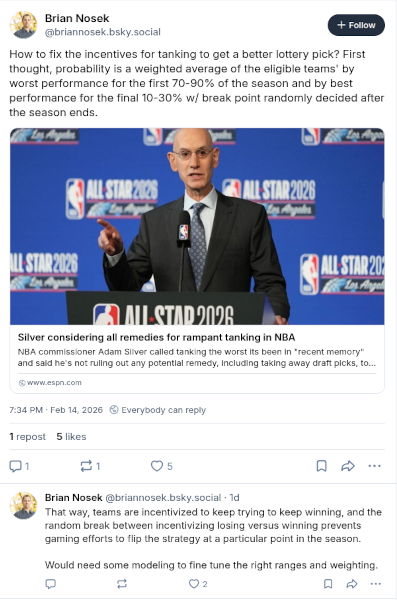

Professor-level Analysis to Solve NBA Tanking
Somewhat out of the blue, Brian Nosek weighed in with his solution to the problem of NBA tanking. Nosek is a University of Virginia psychology professor and a founder of the Center for Open Science. COS is the foremost authority on the relationship between research quality, academic integrity and data sharing.

Nosek’s recommendation is a “tweak” and not an “overhaul.” Bill Simmons and Zach Lowe spent ~30 minutes during their most recent podcast suggesting (then discussing) tweaks that the NBA might adopt in order to solve the problem of teams’ tanking (losing games with intention so that they improve their player draft position). Simmons introduced the subject by highlighting how tanking is a multi-faceted problem, and not a singular dilemma. The incentives are all wrong, according to Simmons. The season is too long and it means that star players more fragile. Teams profit from the longer season and have already pocketed customers’ season-ticket money, plus face no repercussions for a let’s tank decision.
Lowe made the point a few times that a sports league will always have its bad teams and a reverse-order draft should, in theory, redistribute talent in ways that help the bad teams. Nothing differentiates a bad-on-purpose team from a just-bad team. Nosek’s solution incentivizes the games in a manner that should prevent (but not necessarily penalize) bad-on-purpose teams.
It doesn’t address the how 82 games is too many for an NBA season however. The Nosek formula works for 82, 72 or 62 games in a season. Now that Barack Obama has added his voice to the chorus of people saying “let’s play fewer games” we shall see if the tipping point has arrived.
I think that data sharing is a crucial overlooked aspect for any tanking solution in part because data sharing offers a path to evidence for why more injuries occur when players experience longer schedules with harder games, something that the NBA Commissioner Adam Silver disputes. Simon Kuper has the data for European soccer and wrote the article that it’s not necessarily the number of games, but the higher intensity and its increased frequency with more games that leads to injury. I’ve yet to read the North American version of this article for basketball (or football, baseball or hockey).
If the NBA did opt for a shorter season it would increase the importance of shared data, something to give teams replacement data after they lose 10 games worth of team data. The quality of the shared data should also increase from playing more competitive games across the league. Teams and players will be get a clearer indication of wear and tear on athletes.
Improving our collective understanding of the physical deterioration of professional basketball players still might not predict injury occurrences. The risk modeling for injury prediction will have to parse huge numbers of mostly indistinguishable events to differentiate among athletes whe vary enormously in their physical dimensions and capabilities. The risk modeling for athletes’ decline is, however, far easier and creates a substantially different financial risk model for sports teams.
Right now NBA teams employ high-energy playing styles that reduce the effectiveness of star players, especially during crunch time late in games. The playing style benefits from younger, faster participants which in turn raises the stakes for NBA teams’ successful drafts and young free agent pickups. Shared data and more data for biomechanics and player tracking should be able to add nuance to high-energy strategy that doesn’t also have the severe injury effects.
There will always be bad teams. The NFL has successfully tweaked its rules so that the natural cycle of winning and losing is democratic (small-d) but even it hasn’t eliminated tanking. Chuck Klosterman’s new book about football says that the games’ physicality is a high-level floor that demands player effort. But the NFL seems to like the reverse-order player draft as a way to distribute talent, making late-season tanking unavoidable.
If a Nosek algorithm can disable the incentives for losing, then data sharing might then kick in the potential for analytical nuance of players’ biomechanics and exertion data to diversify the range of successful NBA playing styles (big and slow, small and fast, three and D, stars and scrubs, etc.). Maybe the path to NFL-like parity in the NBA is the same one that ends the scourge of tanking.
Olympic Skiers’ Autonomy
Lindsey Vonn crashed out of the Olympics, skiing on one leg at age 41 in her sports’ most competitive, highest profile race. There’s lots in that last sentence to suggest that Vonn’s participation was unwise, possibly irrational. Any suggestion that whatever occured is ethically questionable is way off base. Vonn knew the risks involved and a made a decision that was her decision to make, and no one else’s.
The subject of autonomy around Vonn’s race gained significance when Norway’s ski federation decided that Marte Monsen, who also seriously hurt herself during a pre-Olympics race, should not participate in the Olympics. An Olympics race official did not elaborate the reasons, just saying that Norway brought Monsen to Cortina, and “at the end they decided not to let her start for safety reasons.”
Monsen had suffered injuries to her head. A head injury changes the individuals’ judgment calculation, giving authorities more leeway to interject on an athletes’ behalf. Monsen is also 26 years old with her best professional skiing years ahead of her (probably). There is an economic dimension that hangs over an Olympics return-to-ski decision, where the enormous global attention creates financial opportunities that exceed anything else in the sport.
Vonn was experienced, informed, cared for and hungry for the media attention. Even if her risk model suggested that she was more likely to fall than to successfully navigate the race course, there was nothing missing in the details of her situational risk analysis, and that includes the enormous benefit from attention that would come to her.
I watched the video of Vonn’s fall with an experienced ski technician. He said and anyone could see that she was done for before she hit the lip that launched her to her doom. The skis needed to be parallel and were not even close. The strength to keep her no-ACL left leg beside her bionic, surgically-repaired right leg was not there. Vonn rotated her position to absorb the force on her bionic right side, an indication that she was prepared for this outcome both cognitively and physically. Vonn ate it. Her left leg broke. The right leg held up. Her brand as a risk-taker remains authentic.
Autonomy is a real issue in sports return-to-play decisions. Norway said little about the reasons for holding Monsen out of the Olympics. Meanwhile Vonn added to her sponsorship portfolio leading up to her (probably) final race, partnering with healthcare apparel maker FIGS in a campaign that celebrates the medical team whose technical excellence made it possible for her broken 41-year old body (augmented by Vonn’s own hard work) to compete at a the sport’s highest level. Vonn knows more about her body and how the situation of an Olympics downhill ski race stands to damage it further. She can at the same time limit her downside risk and profit from it because she has a bionic right leg, and if the ski conditions put her weaker left leg in an untenable position then, well, it’s still a win for Vonn at the end of the day.
Obviously most athletes are not Lindsey Vonn. They are not 41-year elite-level Olympic competitors who know their bodies and their technical craft in ways that few athletes are ever in position to experience.
Most athletes are not Marte Monsen. They are not best-in-Europe at age 26 and come from a nation, Norway, that invented the idea of Long-Term Athletic Development. Their long-term best interests might not be prioritized over the short term gain that come with once every four years Olympics.
Privacy is a factor in return-to-play. I regularly ask college athletes about “setbacks.” These are situations where athletes’ development isn’t positive and productive. These situations can, in the worst cases, become downward spirals that become difficult to escape. These athletes are completely aware that their health and performance data sometimes exists in a gray area. The data affects their personal situation and it affects their team’s competitiveness. The athletes know that their data can be used against them by coaches in a setback situation. This is the where athletes’ autonomy and privacy both play a role in what stands to be the defining moments of young athletes’ careers.
Celebrate Vonn, or just watch her commercials begrudgingly. Keep an eye out for Monsen. See if she reaches her star potential. Remember the thousands of other athletes around the world who don’t have the autonomy or the protections to futureproof their return-to-competition decisions.
News
Perceptions of Biomechanical Devices in Collegiate Baseball Pitchers and Training Staff: A Qualitative Study in The International Journal of Sports Physical Therapy by Chelsea Martin et al. on February 1, 2026
Softening the blow - Inside the data-driven quest to make football helmets safer in Science by Adrian Cho on February 5, 2026
NCAA Refuses Settlement Talks in Athlete Employment Lawsuit in Front Office Sports by Amanda Christovich on February 11, 2026
How AWS-powered Next Gen Stats changed the NFL forever in Fast Company by Steve Melendez on February 6, 2026
‘It’s so competitive… it’s ridiculous’: Inside player scouting at England vs USA U15s in The Athletic by Jacob Tanswell on February 16, 2026